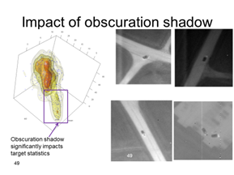

Tools
SysML/UML provide a standardized framework
for capturing system elements in a graphical format. Multiple views allow capturing
different aspects of the system (conops, behavior, components, etc.) and at different levels – from a
top level use case to the detail design of a software component. SysML/UML has been used on all our programs.

C/C++ ‘C’ and C++ were used
extensively on all real-time projects.
Development environments include Microsoft (Visual Studio),
Eclipse/Intel (Linux) and gcc (Linux). C was also used on VISTA,
where the main Java program interfaced to a C program that utilized the ffmpeg
libraries to provide synchronized playback of video files.
OpenMP is an cross-platform open-source
library that can facilitate writing multi-threaded programs. OpenMP was utilized on RAPIDS to ensure
optimum utilization of the embedded SBC’s four available cores.
Boost libraries provide
cross-platform pre-built and tested functions that can significantly reduce
software development costs by eliminating the need to “re-invent the
wheel”. Boost libaries were
used in the development of the RAPIDS system.
Matlab was used extensively for analysis
and algorithm development on the Advanced Mobile Targeting program, AIRS, and
RAPIDS.
State
Transition Model for running person on unconstrained terrain
.
Java
provides a robust cross-platform capability and is and provides powerful frameworks
for generating GUIs. Java was used
for the Vista program (leveraging the NASA World Wind SDK) and for RAPIDs
Command Console, where it was also used to generate the user interface.

Ffmpeq is a C language library for
processing video files. It was used
on the Vista program to transcode aribtrary video formats into a format that
could be fully synchronized with the mission playback. This required fully variable speed playback both
forward and backward, as well as random access. These capabilities are not supported by
most current highly compressed codecs.
R,
an open-source statiscal package,
was used on Advanced Mobile
Targeting for detailed statistical anaylsis of target and background feature
vectors and for its advanced plotting capability which provides insight into
the problem domain.

OpenCV
is an image processing library which can be optimized for advanced processor
capabilities, such as Intel’s AVX or even graphics cards (such as
NVIDIA’s CUDA). It was used
for the RAPIDs Linux embedded image processors.
NASA’s
World Wind provides a Google Earth type User Interface and an open-source
Java SDK is available.
NASA’s World Wind was used on the Mobile Targeting Program to
display the location of the simulated UAV, scan footprint, and targets. It was used on the RAPIDS program
to display the location of intruders.
It was the core element of the VISTA program, which was to replace the
existing vector graphic 2D display with a 3D map overlay capability.
Bayesian
Networks provide a framework for capturing and exploting complex
statistical relationships.
They were used in our detection modules to filter out false alarms, the classification
modules to determine the most likely classification for the object, and
tracking modules to assist in associating detections to tracks.
Eclipse IDE was used to support Intel
‘C’ and Java on Linux for the RAPIDS program as well as Java
development on Windows for both RAPIDS and VISTA.
Linux
Windows
SQL was used in Advanced Mobile Targeting
to optimize algorithms. Algorithm
configurations and parameter settings were maintained in the database as well
as the results of the runs using those parameters and settings.